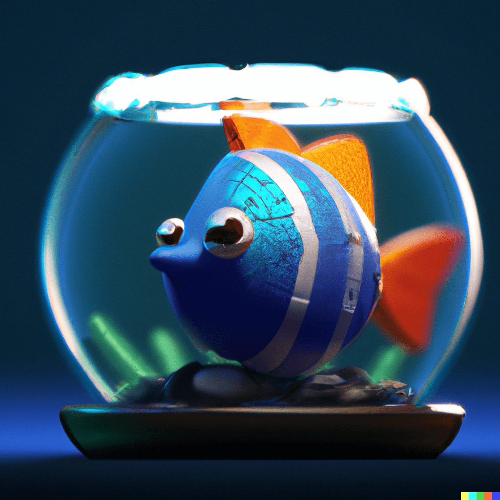

La inteligencia artificial es un campo en constante evolución que plantea desafíos y oportunidades. Si bien su potencial es innegable, es fundamental abordar los aspectos éticos y legales para garantizar un uso responsable y seguro. La transparencia y la explicabilidad de los algoritmos utilizados en las inteligencias artificiales son cruciales para fomentar la confianza y evitar posibles sesgos o discriminaciones. Además, es importante promover una regulación adecuada que proteja los derechos de los individuos y establezca límites claros en términos de privacidad y seguridad. Con un enfoque equilibrado, la inteligencia artificial tiene el potencial de impulsar avances significativos en diversos campos, mejorando nuestras vidas de manera sostenible.
Todas las imágenes utilizadas en la página web han sido generadas utilizando la IA DALL·E. Esta poderosa inteligencia artificial es capaz de crear imágenes completamente originales a partir de descripciones o bocetos. Gracias a sus algoritmos avanzados y su capacidad para comprender el contexto y los detalles, DALL·E produce imágenes realistas y de alta calidad que se adaptan perfectamente a las necesidades del diseño web. Desde ilustraciones y paisajes hasta objetos y personas, la IA DALL·E brinda una amplia gama de opciones visuales para enriquecer la experiencia de los visitantes en la página.
